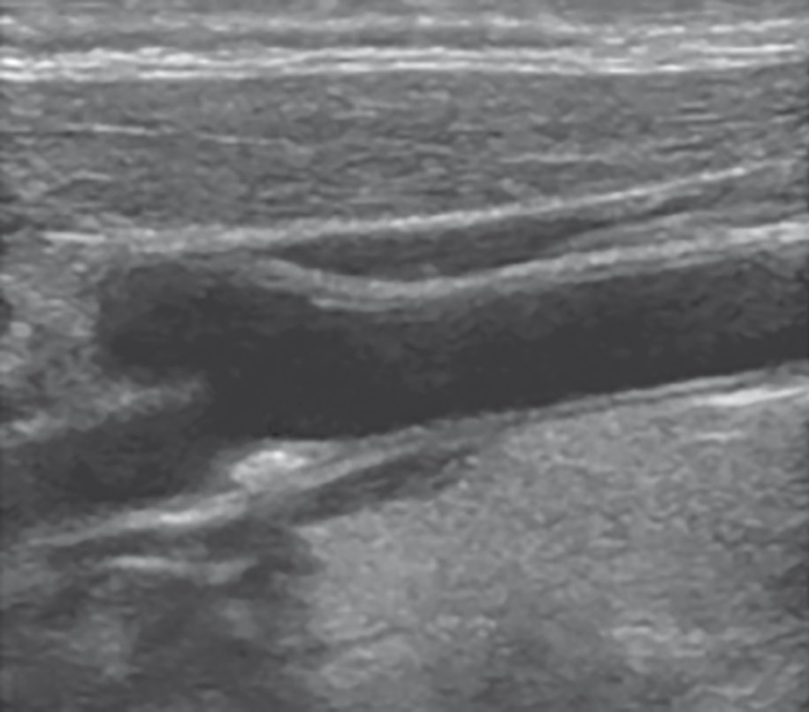
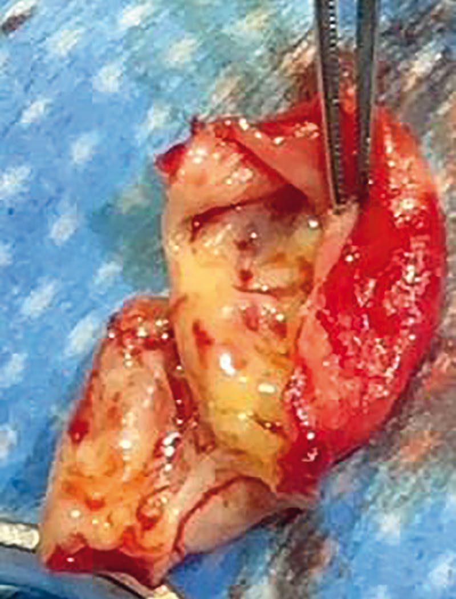
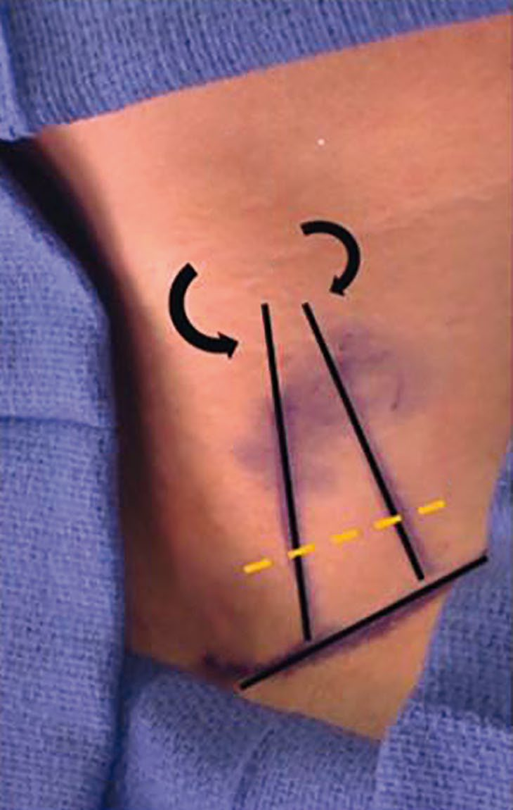

Carotid Artery Disease
Summary
- Carotid artery stenosis, predominantly atherosclerotic disease of the carotid bifurcation, is a major cause of transient ischaemic attack (TIA) and stroke, affecting an estimated 1.5% of individuals worldwide [1].
- Around 15% of the 150,000 cerebrovascular accidents (CVAs) occurring annually in the UK are due to atherosclerotic carotid disease [2].
- Diagnosis rests on history, carotid duplex ultrasound, and further imaging, while carotid endarterectomy (CEA) (supported by landmark randomised trials (NASCET, ECST, ACAS, ACST)) remains the mainstay of intervention for significant stenosis, with carotid stenting and transcarotid artery revascularisation (TCAR) reserved largely for high-risk patients [1][3].
Definition
- A cerebrovascular accident (CVA), or stroke, is a rapidly developing neurological deficit caused by ischaemia with infarction; a TIA is an acute episode of focal (cerebral or visual) neurological deficit caused by ischaemia without infarction [2].
- Symptoms resolving within 24 hours are historically categorised as TIA, whereas those persisting beyond this interval are consistent with stroke, though the 24-hour cut-off is now considered somewhat arbitrary [1][4].
- Symptomatic carotid stenosis is defined as a patient who has experienced amaurosis fugax, cortical TIA, or stroke within the 6 months before presentation, attributable to an ipsilateral carotid lesion [1].
Pathophysiology
- Evidence of early atherosclerotic arterial disease can be detected from the third decade of life; damage to the arterial intima by free radicals or lipoproteins leads to fatty streak formation, the precursor of arterial plaque [1].
- Areas subject to turbulent blood flow, such as the carotid bifurcation, are particularly prone to plaque formation, which can progress to luminal encroachment, stenosis or occlusion, and serve as a nidus for thrombus formation with risk of thromboembolic TIA or stroke [1].
- CVA/TIA arises from disease at the origin of the internal carotid artery (ICA) due to platelet or atheromatous embolisation from the plaque surface, usually following plaque rupture [2].
- TIAs in general are caused by distal embolisation of platelet thrombi forming on an atheromatous plaque into the cerebral circulation, and represent a warning of impending major stroke [5].
- Amaurosis fugax results from a minute thrombus from an atheromatous carotid plaque passing into the central retinal artery, causing transient monocular blindness; lasting obstruction causes permanent blindness [5][6].
Clinical features
- TIAs are short-lived mini-strokes, often recurrent, causing unilateral motor or sensory loss in the arm, leg or face, transient blindness (amaurosis fugax), or speech impairment (dysphasia) [5].
- Amaurosis fugax is described as a curtain or grey veil coming down across the visual field, lasting seconds to minutes, caused by central retinal artery involvement; internal capsular stroke produces dense hemiplegia including the face (striate branches of the middle cerebral artery), and hemianopia is loss of vision in one half of the visual field [2].
- Clinical variants include stroke in evolution (progressive deficit over hours/days), completed stroke (stable end-result lasting over 24 hours), and crescendo TIA (rapidly recurring TIA of increasing frequency, suggesting an unstable plaque with ongoing platelet aggregation) [2].
- Carotid bruits are detectable in over 10% of patients aged >60 but correlate poorly with degree of stenosis or CVA risk, may not arise from the ICA, and patients with significant stenosis may have no audible bruit at all (a "false-negative bruit"), while a bruit can also arise from a stenotic external carotid artery ("false-positive bruit") [1][2].
- Eighty per cent of TIAs are in the carotid territory [2].
- Other causes of transient monocular blindness include multiple sclerosis, acute glaucoma, retinal tears, and temporal arteritis [4].
- Hollenhorst plaques (cholesterol emboli) may be seen on ophthalmoscopic examination in amaurosis fugax from ICA/ophthalmic branch occlusion [6].
Etiology
- Risk factors predisposing to carotid artery stenosis are those associated with atherogenesis generally: smoking, hypertension, dyslipidaemia and diabetes [1].
- Approximately 100,000 carotid interventions are performed annually in the United States [1].
- Stroke is the third commonest cause of death in the UK after coronary heart disease and cancer, with incidence of stroke 200 per 100,000 and TIA 35 per 100,000 [2].
- Common causes of ischaemic stroke are cardiogenic emboli (35%), carotid artery stenosis (30%), lacunar infarcts (10%), miscellaneous (10%), and idiopathic (15%); 85% of all strokes are ischaemic and 15% haemorrhagic [7].
- A prior history of TIA or stroke is an important predictor of recurrent ipsilateral stroke, and the severity of carotid stenosis is a strong predictor of stroke risk [7].
- Non-atherosclerotic causes of carotid disease include fibromuscular dysplasia, carotid dissection, and carotid aneurysm [1].
Diagnosis
- Diagnosis combines clinical history and physical examination with imaging; a thorough history should include atrial fibrillation and other predisposing conditions [1].
- Colour duplex scan is indicated for all patients with TIA/CVA within the last 6 months, and is a fast, cost-effective, first-line modality [1][2].
- On carotid duplex, ICA stenosis is graded by peak systolic velocity (PSV) and ICA/CCA PSV ratio: normal <125 cm/s; <50% stenosis <125 cm/s; 50–69% stenosis 125–230 cm/s (ratio 2–4); >70% stenosis >230 cm/s (ratio >4, end-diastolic velocity >100 cm/s) [1].
- Percentage stenosis can be measured by the ECST method (estimated original diameter minus narrowest ICA diameter, divided by estimated original diameter) or the NASCET method (normal distal cervical ICA minus narrowest ICA diameter, divided by distal ICA diameter) [1].
- MRA or CTA is used when duplex is inconclusive or difficult owing to calcified vessels [2].
- CTA additionally images the aortic arch, tortuosity, aberrant anatomy, lesion length/extent, tandem lesions, and the circle of Willis (important for planning a shunt or flow reversal), but has limitations from contrast exposure, radiation, and reduced reliability distinguishing moderate from severe stenosis [1].

Scoring and Severity
- Landmark trials define the stenosis thresholds for intervention.
- NASCET demonstrated that symptomatic patients with ≥70% stenosis have a 9% risk of stroke at 2 years compared with 26% on medical therapy alone; for symptomatic patients with <50% stenosis, CEA did not reduce future neurologic events compared with medical therapy in either NASCET or ECST [1].
- Combining ECST and NASCET results, CVA in the first year following CEA fell from 18% with best medical therapy to 3–5% with surgery plus best medical therapy [2].
- For asymptomatic disease, ACAS and ACST trials found combined stroke and death at 5 years was 4.1% with CEA for ≥60% stenosis versus 10% with medical therapy alone [1].
- Risk of stroke following a TIA is approximately 18% in the first year, 10% in the first 90 days, and 4% in the first 24 hours [2].
- High-surgical-risk criteria for CEA (favouring stenting) include anatomical factors, high carotid bifurcation above C2, low common carotid artery below the clavicle, contralateral carotid occlusion, restenosis after prior CEA, previous neck irradiation, prior radical neck dissection, contralateral laryngeal nerve palsy, tracheostomy (and physiological factors) age ≥80 years, LVEF <30%, NYHA class III/IV heart failure, unstable (CCS class III/IV) angina, recent MI, clinically significant cardiac disease, severe COPD, and end-stage renal disease on dialysis [7].
Treatment and Management
- Best medical therapy comprises an antiplatelet agent (aspirin, dipyridamole, or clopidogrel), smoking cessation, optimisation of blood pressure and diabetes control, and a statin irrespective of baseline cholesterol [2][6].
- CEA is offered to symptomatic patients with ≥70% (or ≥50% in select high-risk patients) ICA stenosis, and asymptomatic patients with ≥70% (or >60%) stenosis; symptomatic patients with <50% stenosis are treated medically (Plavix, aspirin, statin, risk-factor optimisation) rather than surgically [2][6].
- Urgent CEA within 2 weeks is now considered for all patients presenting with acute TIA/CVA [2].
- Timing of CEA after stroke follows: 2 weeks after a small non-haemorrhagic stroke, 3 weeks after a large non-haemorrhagic stroke, and 6–8 weeks after a haemorrhagic stroke; emergent CEA may benefit fluctuating neurological symptoms or crescendo/evolving TIAs [6].
- With bilateral disease, the tightest side is repaired first; if equally tight bilaterally, the dominant side is repaired first [6].
- An occluded ICA should not be repaired, as there is no benefit and repair can exacerbate injury with bleeding; heparin or clopidogrel is used to prevent clot propagation acutely [6].
- Carotid artery stenting is reserved for high-risk patients (e.g., prior CEA, severe cardiac comorbidity, previous neck irradiation or dissection); TCAR uses a distal carotid-to-femoral shunt to redirect flow and embolic debris away from the brain and carries a lower stroke rate than transfemoral stenting [6].
Surgeries
- CEA involves clamping the carotid vessels, an arteriotomy in the common carotid artery extended into the internal carotid artery through the diseased segment, removal of the occlusive plaque (endarterectomy, removing the intima and part of the media), and closure, often with a patch; eversion endarterectomy may avoid the need for a patch [2][5][6].
- The incision is anterior to sternocleidomastoid; a temporary shunt (e.g., Pruitt or Javid) may be used to maintain cerebral perfusion during clamping, guided by awake neurological assessment, stump pressure (<50 mmHg indicates need for shunt), or transcranial Doppler monitoring of middle cerebral artery flow, routinely used in about 10% of awake patients [2][6].
- The most important technical concern is achieving a good distal endpoint of the endarterectomy [6].
- The facial vein, a branch of the internal jugular vein overlying the carotid bifurcation, can be routinely divided safely for exposure [6].
- For patients under general anaesthesia, focal ipsilateral EEG amplitude decrease/slowing, or a fall to <50% of baseline middle cerebral artery velocity on transcranial Doppler, indicates cerebral ischaemia warranting shunt placement [7].


Complications
- Cranial nerve injury is the characteristic complication of CEA: vagus nerve injury (from vascular clamping) is the most common, causing hoarseness via the recurrent laryngeal nerve; hypoglossal nerve injury causes tongue deviation toward the injured side with speech/mastication difficulty; glossopharyngeal nerve injury (rare, with high carotid dissection) causes dysphagia; ansa cervicalis injury causes no serious deficit; and marginal mandibular branch of the facial nerve injury (from a jaw-angle retractor) affects the corner of the mouth [6].
- Postoperative facial/neck numbness and hypoglossal or glossopharyngeal nerve damage (with dysphagia or tongue weakness) are also described [2].
- Death or major disabling stroke occurs in 1–2% of CEA, minor stroke with recovery in 3–6%; myocardial infarction is the most common cause of non-stroke morbidity and mortality after CEA [2][6].
- An acute neurological event immediately after CEA requires urgent return to theatre to check for an intimal flap or thrombosis, using intraoperative ultrasound [6].
- Post-CEA pseudoaneurysm presents as a pulsatile, bleeding mass and requires draping/prepping before intubation followed by repair [6].
- Around 20% of patients develop hypertension after CEA due to injury to the carotid body/baroreceptor, treated with sodium nitroprusside to avoid bleeding [6].
- Restenosis after CEA occurs in about 15% of patients [6].
- Wound haematoma is a recognised complication [2].
Prognosis
- The risk of stroke following a TIA is approximately 18% in the first year, 10% within 90 days, and 4% within the first 24 hours, underscoring the urgency of assessment [2].
- CEA combined with best medical therapy reduces first-year CVA risk from 18% (medical therapy alone) to 3–5% in symptomatic patients with significant stenosis [2].
- In asymptomatic patients with ≥60% stenosis, 5-year combined stroke and death is 4.1% with CEA versus 10% with medical therapy alone [1].
- Untreated symptomatic stenosis ≥70% carries a 26% 2-year stroke risk versus 9% with CEA [1].
- A prior history of TIA or stroke is a key predictor of recurrent ipsilateral stroke [7].
References
- Sabiston Textbook of Surgery, 22nd ed., Ch. 101 Contemporary Management of Carotid Disease
- Oxford Handbook of Clinical Surgery, 5th ed., Ch. 19 Peripheral vascular disease, Carotid disease
- The ABSITE Review 2022, Carotid endarterectomy
- Browse's Introduction to the Symptoms and Signs of Surgical Disease, 6th ed., Ch. 10 The arteries, veins and lymphatics, Transient ischaemic attacks
- Bailey & Love's Short Practice of Surgery, 28th ed., Ch. 61 Arterial disorders
- The ABSITE Review 2022, carotid section
- Schwartz's Principles of Surgery: ABSITE and Board Review, Ch. 23 Arterial Disease